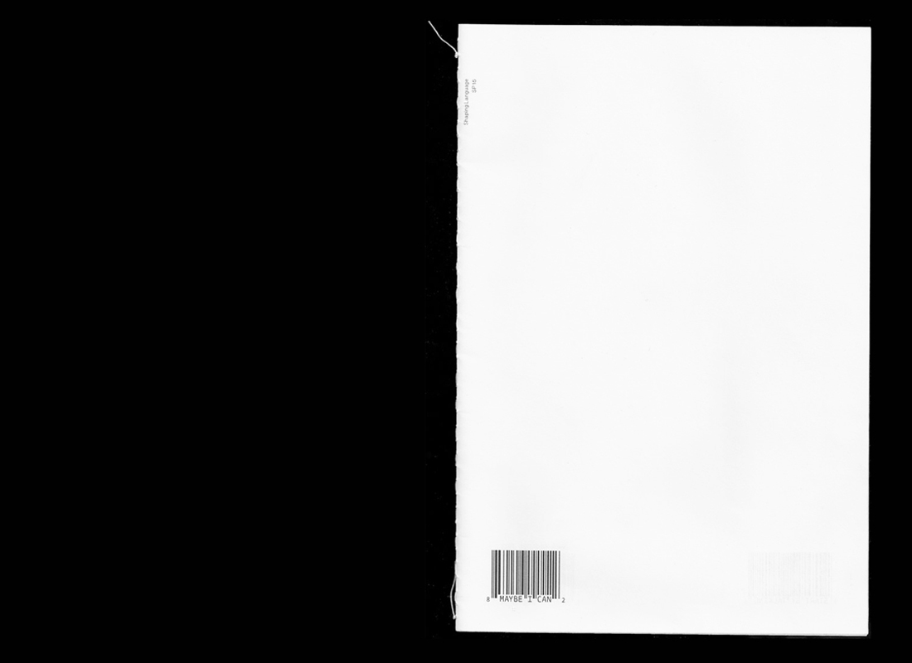

Interview
Booklet (24 pages)
7.5 x 11"
2015
Viviane Jalil and I had a conversation as Hito Steyerl and Xu Bing, the goal of which was to embody the artists as best we could. We discovered a link between Bing and Steyerl's starkly different bodies of work—an interest in the falseness of images (that is, an image that has a first read and an inherent read that are opposed). This booklet, an excerpt of our conversation, expresses that falseness visually.
